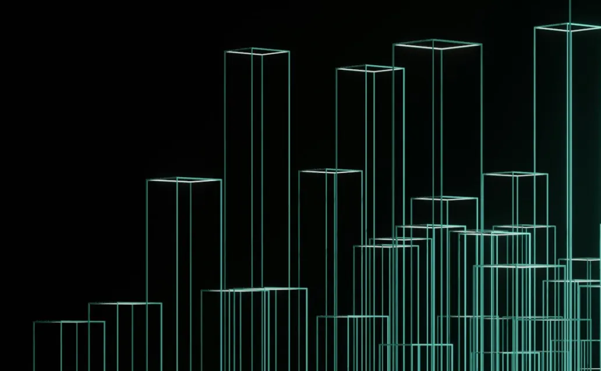
Reimagining Onboarding: Crafting an Intuitive Journey for Tekion’s New Clients
The problem
Tekion hit an inflection point: a slow implementation process was strangling its growth.
Every new client needed 30–45 days of implementation, turning onboarding into a strategic chokepoint that threatened to cap expansion. Tekion teams and dealer partners worked in silos, with no proper tracking or shared learning. Each implementation started from scratch, with teams re-solving problems others had already cracked.
How teams worked
Teams across Tekion relied on shared Slack channels to connect, share information and stay updated.
30+ active people across implementation, engineering, finance and support used Slack channels as their platform.
Typical projects: enterprise software rollouts, new dealer management integrations, hardware implementation, and large product rollouts with many departmental dependencies.
Clarifying the scope
I clarified the ambiguous scope of the “onboarding experience” by leading stakeholder discussions.
- Stakeholders had different ideas of the solution, and there was no dedicated onboarding workflow.
- I organised 5+ stakeholder meetings with PMs and program managers to drive the discussion.
- That gave me a clear understanding of the goals, the product and the previous onboarding flow.
Three personas
Implementation Specialists
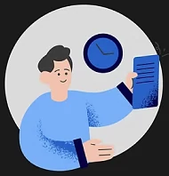
On the implementation team, responsible for all integrations and data exchanges.
Leadership
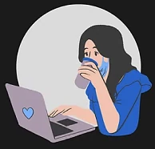
Leaders on both sides, like customer support managers, supervising implementation progress and success.
Customer Employees
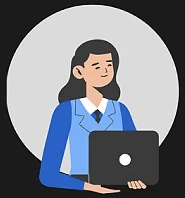
New dealership employees who share required information and learn Tekion’s products.
For an 8-week project, I focused on the primary and secondary users and prioritised their onboarding experience.
Core problems
- No central command
- Traditional PM tools miss the interdependencies across separate teams.
- Communication silos
- Information gets lost between teams, causing misunderstandings and rework.
- Onboarding bottlenecks
- New team members and clients struggle with disorganised information and processes.
- Unclear ownership
- Hard to track who owns what across complex workflows.
- Delays and overruns
- Inefficiency stretches timelines and raises costs.
- Stakeholder frustration
- Little visibility or control for project leads, team members and clients.
Ideation
I brainstormed different onboarding approaches to validate with our target users.
- Create projects
- Assign tasks
- Track progress
- Communicate
- Reporting
- Unified dashboard
- All progress on one screen
- Role-based data access
- Milestone approach
I then built two low-fidelity prototypes to test and refine the approach: Prototype A, a new implementation product with a projects board, my tasks, a dealer dashboard and forms; and Prototype B, a “My Tekion” portal with assigned forms and tasks, invoice details, support tickets and a learning module.
The decision
After testing both with real users, we went with task management.
👍 Task Management
- ✅ Solves ownership issues
- ✅ Tracks in-depth insights
- ✅ Maintains data
- ✅ Regular reporting
- ✅ A set process for scaling
- 🔻 Harder to train employees
👎 One Dashboard
- ✅ Easy to implement
- ✅ Easy to train employees
- 🔻 Doesn’t solve the core problem
- 🔻 Not suitable for scale
From issues to a concept
I designed a new task management portal to counter the core implementation issues.
Issues
Solution flow
Concept validation
With concepts and prototypes in hand, I interviewed 16 users, from implementation teams and CSMs to engineering managers, and grouped every response into themes.
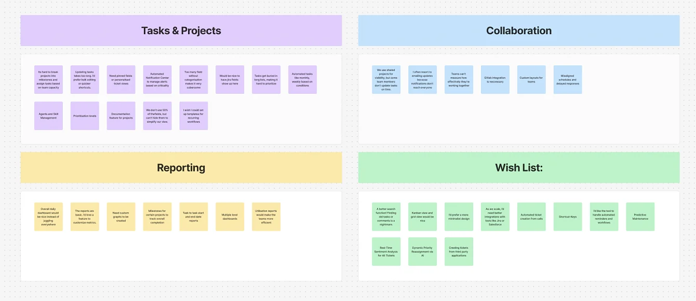
Test, iterate, repeat
After each round I refined the concepts with what we learned, until the feedback became consistent.
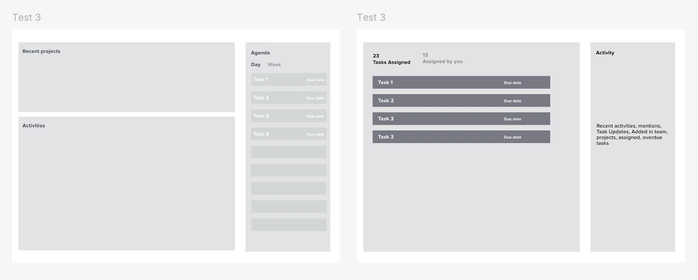
Feature prioritisation
I worked with the PM and stakeholders to set a clear pipeline for the tight proof-of-concept timeline.
| Feature | Priority | Why |
|---|---|---|
| Customisable workflows | High | Users wanted flexibility like ClickUp. |
| Task recommendations | High | Efficiency and automation. |
| Real-time collaboration | High | Slack and Jira integration with priority commenting. |
| Task dependencies & automation | High | Essential for complex workflows and tracking. |
| Role-based access | High | Security and permissions. |
| Custom widgets | High | Flexible visualisation and tracking. |
| Database-style views | Medium | Airtable-like flexibility to highlight, drag and apply values. |
| Reporting | Medium | Customisable project dashboards. |
| Documentation | Medium | No juggling between apps. |
| Mobile app with offline access | Medium | For remote teams working on site. |
| Time tracking & billing | Medium | Billable hours and deadlines. |
| Workspace | Low | Nice to have given existing integrations. |
⛳️ The solution
One home for everyday work
Overdue, in-progress and new tasks, mentions and recent work in one place, so people can focus on what matters.
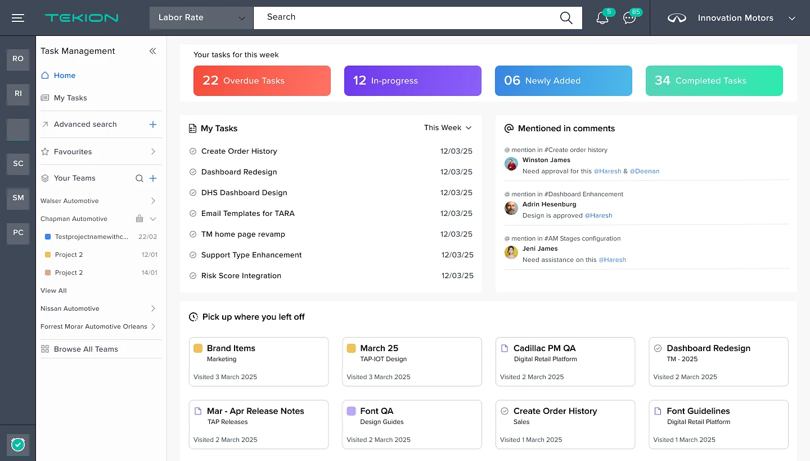
Project boards for every function
Projects split into sections for each team, with owners, status and due dates at a glance.
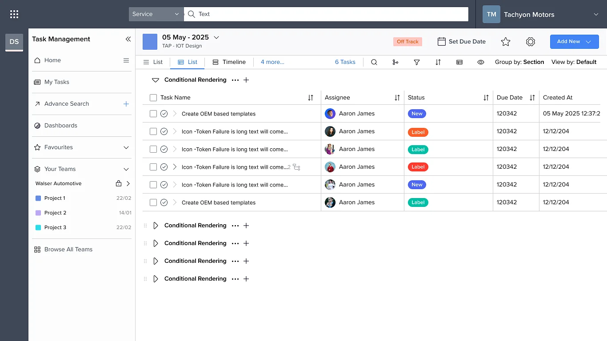
Everything about a task
From blockers and subtasks to linked tasks and documents, with dependencies so everyone sees the whole picture.
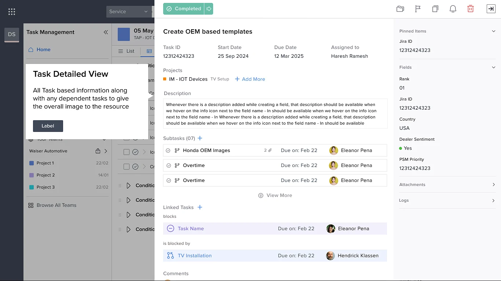
Fields that fit the team
Teams add their own columns, options and defaults, and save them to a shared library.
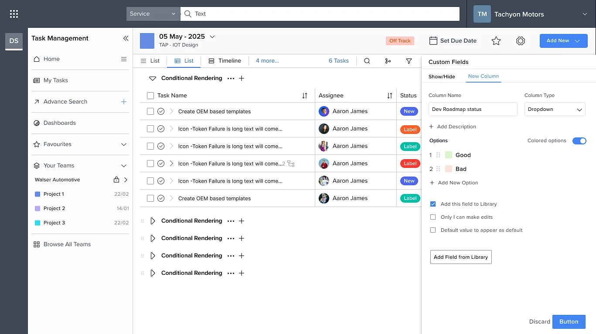
Views for every team
List, calendar, timeline or dashboard, depending on how the team works.
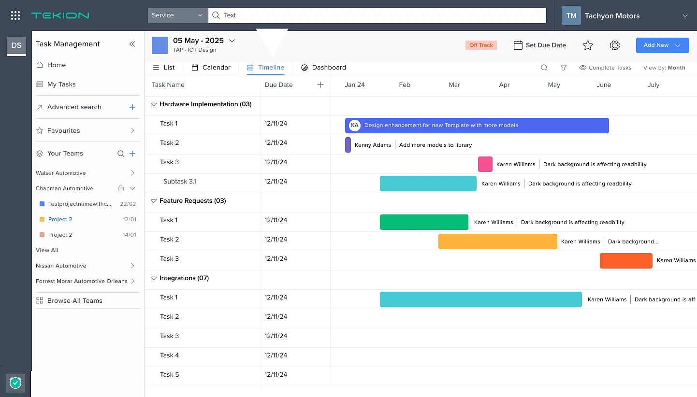
Custom dashboards
Completion, source and module breakdowns for deeper insight.
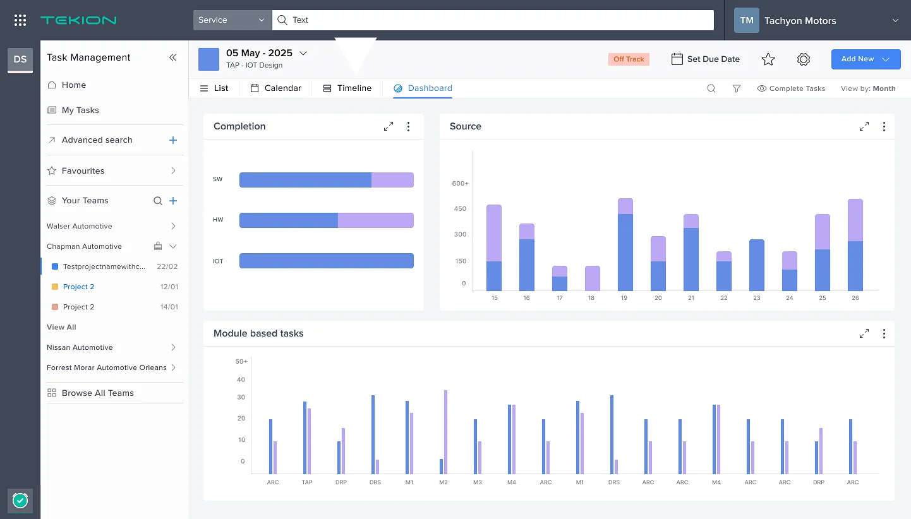
Team view
All of a team’s active projects under one roof, with templates, documents and portfolio alongside.
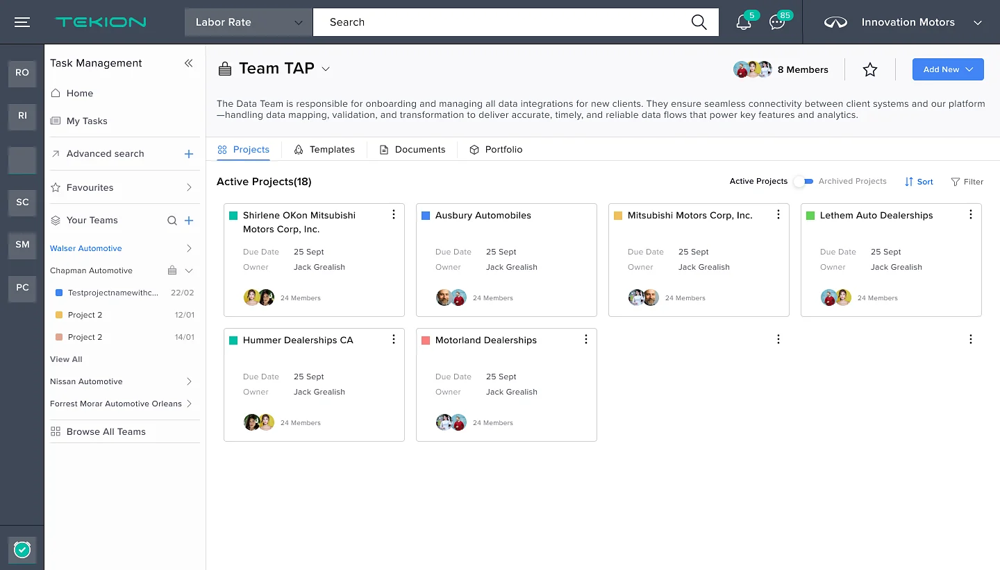
On site, on the go
A lightweight mobile app for implementation teams working at the dealership.
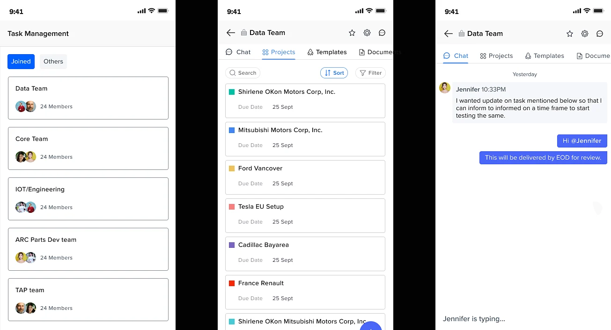
AI-based reporting
An AI summary reads dealer interactions by module and suggests the next actions.
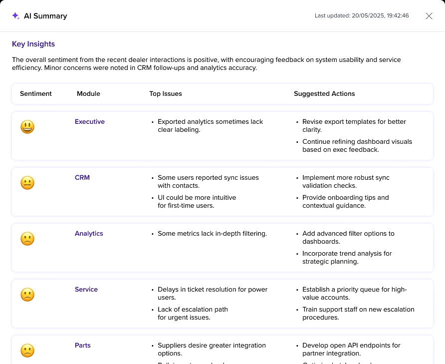
The birth of Task Management
What began as a fix for an implementation bottleneck became a new product in Tekion’s lineup. It now solves internal problems and is used by clients to manage their day-to-day work.